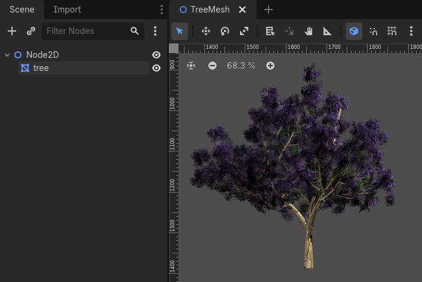

Đang cập nhật
Nội dung trang này chưa được cập nhật cho Godot
4.7
và có thể đã lỗi thời. Nếu bạn biết cách cải thiện trang này hoặc xác nhận
được rằng nó vẫn đúng, hãy gửi một pull request (bản tiếng Anh).
Mesh 2D
Giới thiệu
Trong 3D, mesh được dùng để hiển thị thế giới. Trong 2D, chúng hiếm gặp vì hình ảnh được dùng thường xuyên hơn. Engine 2D của Godot là engine hai chiều thuần túy, nên nó không thể hiển thị trực tiếp mesh 3D (dù có thể làm được qua Viewport và ViewportTexture).
Xem thêm
Nếu bạn muốn hiển thị mesh 3D trên viewport 2D, hãy xem bài hướng dẫn Dùng SubViewport làm texture.
Mesh 2D là mesh chứa hình học hai chiều (Z có thể bỏ qua) thay vì 3D. Bạn có thể tự thử tạo chúng bằng SurfaceTool từ code và hiển thị chúng trong node MeshInstance2D.
Hiện tại, cách duy nhất để tạo mesh 2D trong trình chỉnh sửa là import một file OBJ dưới dạng mesh, hoặc chuyển đổi từ Sprite2D.
Tối ưu số pixel được vẽ
Quy trình này hữu ích để tối ưu việc vẽ 2D trong một số tình huống. Khi vẽ các hình ảnh lớn có vùng trong suốt, Godot sẽ vẽ toàn bộ quad lên màn hình. Các vùng trong suốt lớn vẫn sẽ được vẽ.
Điều này có thể ảnh hưởng đến hiệu năng, nhất là trên thiết bị di động, khi vẽ các hình ảnh rất lớn (thường bằng cỡ màn hình), hoặc xếp chồng nhiều hình ảnh có vùng trong suốt lớn lên nhau (ví dụ khi dùng ParallaxBackground).
Chuyển đổi sang mesh sẽ đảm bảo chỉ những phần không trong suốt được vẽ, phần còn lại bị bỏ qua.
Chuyển Sprite2D thành mesh 2D
Bạn có thể tận dụng tối ưu này bằng cách chuyển Sprite2D thành MeshInstance2D. Hãy bắt đầu với một hình ảnh có nhiều vùng trong suốt ở rìa, như cái cây này:

Đặt nó vào Sprite2D và chọn "Convert to MeshInstance2D" từ menu:

Một hộp thoại sẽ xuất hiện, hiển thị bản xem trước cách mesh 2D sẽ được tạo:

Giá trị mặc định đủ tốt cho nhiều trường hợp, nhưng bạn có thể thay đổi mức nở (growth) và đơn giản hóa (simplification) tùy nhu cầu:

Cuối cùng, nhấn nút và Sprite2D của bạn sẽ được thay thế:
